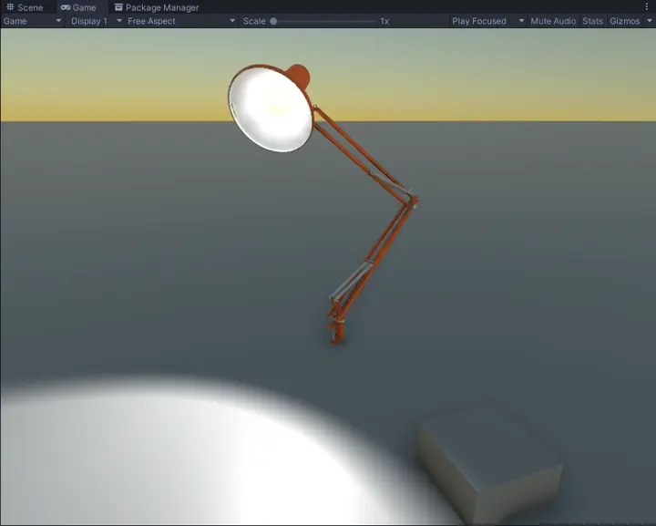

Lattice Modifier for Unity

The asset can be found on the Unity Asset Store.
For a quick overview, check out the Getting Started.
For up-to-date documentation please visit the online documentation.
And check out the Discord server, for a place to discuss, ask questions, and share your work with lattices.
Changelog
v1.3.0
2025/03/17
- Improved compute shader performance
- Added
Maskingoptions to Lattices - Added
Selection Falloff - Added
Fit to Renderer - Added
Save Deformed Mesh... - Added
Interpolationoption for Lattices- Renamed
High Qualityto interpolation typeCubic - Renamed
Low Qualityto interpolation typeLinear Smooth - Added interpolation type
Linear Sharp - Updated
Qualitysample with new interpolation types
- Renamed
- Added
TransformLatticeModifiercomponent - Added a C# lattice solver API
LatticeSolver - Added new samples:
GlobalMaskingTransformWiggle
v1.2.0
2024/12/11
- Added
Apply Methodoption to modifiers - Added support for
Skinned Motion Vectors - Added
Grabsample - Fixed skinned mesh scaling issues with odd transforms
v1.1.0
2024/10/04
- Fixed blend shapes flickering while animating
- Fixed blend shapes without bone weights not deforming
- Added utility component
RebindOnStart - Improved normal and tangent calculation
- Miscellaneous minor bugfixes
v1.0.0
2024/09/23
- Initial Release
Getting Started
Make sure to check out the included samples for examples and demo animations.
Create a Lattice
To start using Lattice Modifiers, create a new GameObject and add the Lattice
component. In the inspector, you can change the Lattice Resolution to add more
handles if needed.
You can edit the Lattice by clicking on handles and moving them with the move, rotate and scale tool. Hold shift to select multiple at a time, and drag click to use a box selection.
For more details on using Lattices take a look at the using Lattices.
Note
If no handles are selected, the transform tools will move the GameObject itself, not the lattice handles.

Add a Modifier
Important
Make sure your model has Read/Write enabled in the model import settings,
otherwise the modifier cannot be used.
Select your model, the GameObject with a Mesh Filter and Mesh Renderer, and
add the Lattice Modifier component.
In the inspector, add the Lattice we previously made. Set Interpolation to
Cubic to improve deformation quality, and Global if you want the lattice
to apply outside of its bounds. Take a look at the
included Quality sample for an example of each of these
properties.
If you now select the Lattice again and move around the handles, you should see the model deforming along with the Lattice.
For more details on the Lattice Modifier, take a look at the Lattice Modifier documentation.

Add a Skinned Modifier
Important
If you intend to use Skinned Lattice Modifiers in your project, make sure GPU
skinning is enabled in the project settings:
Project Settings > Player > Other Settings > GPU Skinning.
Important
Make sure your model has Read/Write enabled in the model import settings,
otherwise the modifier cannot be used.
Select your model, the GameObject with a Skinned Mesh Renderer, and add the
Skinned Lattice Modifier component.
In the inspector, add the Lattice we previously made, either to the the
Lattices list (which are applied before skinning), or the
Skinned lattices list (which are applied after skinning). Take a look at
the included Skinned sample for an example of the Skinned
Lattice Modifier.
If you now select the Lattice again and move around the handles, you should the character deforming along with the lattice.
For more details on the Skinned Lattice Modifier, take a look at the Skinned Lattice Modifier documentation.
Tip
It can be hard to determine how Lattices applied before skinning affect your character, especially if their rig has moved from their bind pose (the T-pose or A-pose).
A quick way to get a reference of their pre-skinning position is to create a
child GameObject under your Skinned Mesh Renderer, add a Mesh Filter and
Mesh Renderer, and copy the target mesh and materials across. This will
display your character in their bind pose which you can use as reference.
Blend Shapes
If you’re animating blend shapes using an Animator, the blend shapes may not be
correctly animated as the Animator will still be “bound” to the undeformed mesh.
You will need to rebind the Animator, this can be done by calling
Animator.Rebind() from a script.
A small utility component RebindOnStart has been provided to achieve this.
You can add this component next to the Animator, and it will call
Animator.Rebind() for you when you start the game.

Using Lattices
Lattice Editor
Important
To see the lattice editor, make sure Gizmos are enabled.
The editor currently supports:
-
Multiselection of handles
HoldShiftto select multiple handles at a time. Drag click to use a selection box (holdingShiftwill add or remove from current selection) -
Selection Falloff
Enable selection falloff in the context menu (right click menu). Will move nearby handles along with the selected ones, using a customisable falloff.- Control the radius of the falloff using the scroll wheel when moving a
handle or from the Lattice Preferences menu.
- Control the radius of the falloff using the scroll wheel when moving a
handle or from the Lattice Preferences menu.
-
Focusing with
F
Focuses on the currently selected handles. If no handles are selected, focuses on the whole Lattice -
Center and Pivot Position Modes
When pivot is selected the last selected handle will act as the pivot point. -
Global and Local Rotation Modes
Both rotation modes are supported, global will show the tool in world space, and local in Lattice space -
Undo and Redo
Supports changing handle positions and changing selected handles -
Fit to Renderer or Transform
Available in the context menu, automatically position and resize Lattices to objects or hierarchies in the scene.- Fitting to a renderer will fit to the single renderer, while fitting to a
transform will fit to contain all child renderers of that transform.
- Fitting to a renderer will fit to the single renderer, while fitting to a
transform will fit to contain all child renderers of that transform.
-
Even more in the Context Menu
Right click when a lattice is selected to show even more operations:-
Option Description Use Selection Falloff Enables or disables selection falloff. Invert Selection Inverts the current selection. Select All Handles Selects all handles. Select Exterior Handles Selects the outer handles, useful when using global deformation. Reset Selected Handles Resets the selection handles back to their default position. Reset All Handles Resets all handle positions back to their default position. Copy Selected Indices Copies selected handle indices so they can be pasted into a Vector3Int[]orList<Vector3Int>within the inspector.Fit To Renderer… Fits the lattice to a selected renderer. Fit to Transform… Fits the lattice to contain all child renderers of a transform. Lattice Preferences… Opens the Lattice Preferences window.
-
Preferences
You can customise the appearance of the Lattice editor within your editor
preferences window, accessible from Edit > Preferences... > Lattice or from
the context menu above.
Animating
You can keyframe Lattice handles using the animation timeline. The easiest way to do this is enable recording mode and then move the desired Lattice handles.

Scripting
The Lattice component comes with many public methods for moving handles.
Take a look at Runtime/Components/Lattice.cs for all the available methods,
the most useful of which will be:
/// Set the offset of a handle relative to its base position.
void SetHandleOffset(int x, int y, int z, Vector3 offset);
void SetHandleOffset(Vector3Int coords, Vector3 offset);
/// Set the position of a handle in local space.
void SetHandlePosition(int x, int y, int z, Vector3 position);
void SetHandlePosition(Vector3Int coords, Vector3 position);
/// Set the position of a handle in world space.
void SetHandleWorldPosition(int x, int y, int z, Vector3 position);
void SetHandleWorldPosition(Vector3Int coords, Vector3 position);Example
This script controls a Lattice to follow a sine wave, simulating cloth waving in the wind. This code is used in the Drapes sample.
[SerializeField] private float _speed;
[SerializeField] private float _scale;
[SerializeField] private float _distance;
[SerializeField] private Lattice _lattice;
private void Update()
{
// To help iterate over all handles you can use the Lattice.GetHandles()
// extension method, rather than 3 nested for loops for each axis
foreach (Vector3Int handle in _lattice.GetHandles())
{
// Determine offset amount
float position = _scale * handle.x;
float wind = Mathf.Sin(_speed * Time.timeSinceLevelLoad + position);
float offset = _distance * handle.y * wind;
// Set handle offset
_lattice.SetHandleOffset(handle, new Vector3(0, 0, offset));
}
}Components
Lattice
Lattices are the 3d grid used to control deformations. Take a look at using Lattices for guides on editing, animating and scripting Lattices.

Lattices have the following properties:
- Resolution
The number of handles across each axis.
Per-Modifier Properties
When adding Lattices to a modifier component, each Lattice has additional per-modifier properties:
-
Interpolation
Various modes of interpolation:-
Value Description Linear Sharp Lowest quality sampling. Is cheaper than Cubic, but can have obvious seams between cells.Linear Smooth Similar to Linear Sharp, but adds smoothing to remove obvious seams between cells. Not always ideal for extreme effects such as rotation.Cubic The highest quality of interpolation. Is more expensive, but adds smooth, continuous deformation. Better for more extreme effects such as rotation.
-
-
Global
Will continue to apply deformations outside of the Lattice. If disabled, deformations are restrained to near the Lattice. -
Mask
Controls how a Lattice is applied to different parts of the mesh. Take a look at Masking Options.
Masking Options
The following masking options are available when adding a Lattice to a modifier. The selection settings allow you to specify which vertices will be deformed. While the vertex settings allow you to control how much each individual vertex is then deformed.
Selection Mask
The selection mask decides which vertices will have deformation applied. This
limits which vertices run through the compute shader, so depending on the size
of your mesh and number of submeshes, this may also improve performance.
However, leave it set to Apply To All in most cases. It has the following
types:
-
Apply To All
Applies the deformation to all vertices. -
Material
Applies the deformation only to the vertices using a specific material. Has the following options:-
Option Description Index The material index, matching the materials within the renderer component.
-
Note
A vertex can belong to one or more materials, so just be aware when applying
multiple lattices with the Material mode to these shared vertices.
Vertex Mask
The vertex mask applies a scalar multiplier to the deformation of each vertex. For example, 0 would apply no deformation, while 2 will double the deformation. The vertex mask has the following types:
-
None
No masking is used. -
Constant
Uses a constant multiplier for all vertices.-
Option Description Multiplier Multiplication factor by which the Lattice is applied.
-
-
Color
Uses a vertex color channel as a mask.-
Option Description Channel Color channel to use, i.e. red, green, blue or alpha. Multiplier Additional multiplication factor.
-
-
UV
Uses a vertex UV channel as a mask.-
Option Description UV Texture coordinates to use. Channel Color channel to use. Multiplier Additional multiplication factor.
-
-
Texture
Uses a texture as a mask.-
Option Description UV UVs to use for texture sampling. Texture Texture to be sampled. Channel Color channel of texture to use as mask. Multiplier Additional multiplication factor.
-
Lattice Modifier
Lattice Modifiers allow static meshes to be affected by Lattices. Lattice
Modifiers must be added to GameObjects with a MeshFilter and MeshRenderer.
You can apply multiple Lattices to a Lattice Modifier.
Lattice Modifiers have the following properties:
-
Target Mesh
The mesh used on the attachedMesh Filtercomponent. This field will be automatically filled in when added to the GameObject. -
Apply Method
How Lattices are applied to the mesh.-
Value Description Position Only Vertex position only. Cheaper than deforming the normal and tangent as well, but not as visually accurate. Position, Normal and Tangent Deforms vertex position, normal and tangents. Stretch Deforms position, normal and tangent, and calculates the amount of squash and stretch and stores it in the UV channel chosen in Stretch Channelbelow.
-
-
Stretch Channel
The UV channel to store squish and stretch in to. Only accessible ifApply Methodis set toStretch. -
Update Mode
How often the Lattices are applied. You can change this at runtime with the propertyUpdateMode. Can choose from the following options:-
Value Description Manual Only applied on start, or if RequestUpdate()is called on the component.When Visible Updates every frame when the renderer is visible. Always Updates every frame.
-
-
Lattices
The Lattices to apply to this modifier. Each lattice has additional per-modifier properties.
Tip
You can right click on the component and click Save Deformed Mesh... to
save the mesh as an asset.
Skinned Lattice Modifier
Skinned Lattice Modifiers allow skinned meshes to be affected by Lattices.
Skinned Lattice Modifiers must be added to a GameObject with a
Skinned Mesh Renderer. You can apply multiple Lattices to a Skinned Lattice
Modifier, and choose to apply them before or after skinning.
Skinned Lattice Modifiers have the following properties:
-
Target Mesh
The mesh used on the attachedSkinned Mesh Renderercomponent. This field will be automatically filled in when added to the GameObject. -
Apply Method
How Lattices are applied to the mesh.-
Value Description Position Only Vertex position only. Cheaper than deforming the normal and tangent as well, but not as visually accurate. Position, Normal and Tangent Deforms vertex position, normal and tangents. Stretch Deforms position, normal and tangent, and calculates the amount of squash and stretch and stores it in the UV channel chosen in Stretch Channelbelow.
-
-
Stretch Channel
The UV channel to store squish and stretch in to. Only accessible ifApply Methodis set toStretch. -
Update Mode
How often the pre-skinning Lattices are applied. The Skinned Lattices are not affected by this option, and are updated whenever skinning is updated. You can change this at runtime with the propertyUpdateMode. Can choose from the following options.-
Value Description Manual Only applied on start, or if RequestUpdate()is called on the component.When Visible Updates every frame when the renderer is visible. Always Updates every frame.
-
-
Lattices
The Lattices to apply before skinning. Each lattice has additional per-modifier properties. -
Skinned Lattices
The Lattices to apply after skinning. Each lattice has additional per-modifier properties.
Tip
You can right click on the component and click Save Deformed Mesh... or
Save Deformed Skinned Mesh... to save the mesh as an asset before or after
skinning.
Transform Lattice Modifier
Transform Lattice Modifiers allow you to apply Lattices to Transform components, which can be used to apply deformation to non-mesh objects such as lights, particles emitters, transform targets, and/or any objects which don’t need per-vertex deformation.
The Transform Lattice Modifier makes use of the LatticeSolver class, which
provides a C# implementation of the Lattice deformation shader.

Transform Lattice Modifiers have the following properties:
-
Target Transform
The target transform before any deformations. The component will move, rotate and scale to match where this transform would be once deformed. -
Apply Method
Which components of the transform we want to apply, includingPosition,Rotationand/orScale. -
Lattices
The Lattices to apply. Each lattice has additional per-modifier properties. Only mask typesNoneandConstantare valid for Transform Lattice Modifiers.
Roadmap
Planned
-
Interactive Samples
Add more samples with interactive and/or runtime functionality, rather than keyframed animations.
Under Consideration
-
Scripting Only Lattice
The current lattice implementation has some CPU overhead to properly work with the animation system. A cheaper alternative could also be added, however it would not support keyframing handles.
-
Cross Asset Support
Assets which also edit meshes may not always be compatible. Will investigate compatibility with popular assets, this will need to be achieved per-asset.
Suggestions
If there’s a core feature you think is missing, send me an email or leave a suggestion on the Discord server and I’ll take a look.
Included Samples
The following samples are provided with the asset. You can import them from the Package Manager:
- Open the
In Projecttab - Select
Lattice ModifierunderPackages - Other - Go the the
Samplestab - Import your desired sample

Important
These samples have been made in the Universal Render Pipeline (URP). It is recommended you create a URP project to open them. If you import them into a project using a different render pipeline you will need to swap the materials and/or shaders.
Pipes
An example animation using Lattices and Lattice Modifiers.

Skinned
Demonstrates the use of Skinned Lattice Modifiers, and the different application methods. Pre-skinning vs post-skinning, and attaching Lattices to the skeleton.

Squished
Demonstrates reading stretch and squish in custom shaders. Two shaders are included, one written in ShaderLab/HLSL and one created in Shader Graph.

Quality
Demonstrates the various Interpolation types: Cubic, Linear Smooth and
Linear Sharp.
Global
Demonstrates the difference lattices with Global disabled and enabled.
Drapes
An example of controlling a lattice using scripts. The Lattice is controlled via script to emulate wind.

Mode
An example of the different UpdateModes of a modifier and an example of controlling them from scripts.
Transform
Demonstrates the Transform Lattice Modifier, which is used to control the
light sources.

Grab
An interactive demo of deforming a face using spring physics.
Masking
An example of masking several deformations using materials and vertex colors.
Wiggle
An example script to wiggle the handles of a lattice, applied to both a mesh and a transform.